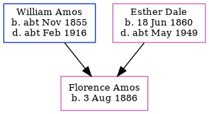

Austin William Amos 1884 - c1976
[ Home ] | [ Calendar ] | [ Surnames Index ] | [ Census Index ] | [ Family History ]The child of William Amos (a railroad platelayer) and Esther Dale (a domestic duties), Austin Amos, the first cousin twice-removed on the father's side of Nigel Horne, was born in Buckland, Kent, England on Dec 9, 18841,2,3,4,5, was baptized there at St Andrew's Church on Feb 8, 1885 and married Rosina Langley (with whom he had 1 child, Peggy Rosina) in Croydon, Surrey, England around May 19146.
During his life, he was living at Union Road in Buckland on Apr 5, 18911; at London Road, Dover, Kent, England on Mar 31, 19012; and at 9 Buckland Avenue in Dover on Sep 29, 1939.
He died c. Nov 1976 in Dover4.
Parents
- William Austin was born c. Nov 1855
- Esther Louisa was born on Jun 18, 1860
Children
- Peggy Rosina was born on Mar 11, 1915
Citations
- 1891 England, Wales & Scotland Census - Findmypast (was age 6 and the son of the head of the household)
- 1901 England, Wales & Scotland Census - Findmypast (was age 16 and the son of the head of the household)
- England & Wales births 1837-2006 - Findmypast
- England & Wales deaths 1837-2007 - Findmypast
- Kent Baptisms - Findmypast
- England & Wales Marriages 1837-2005 - Findmypast
Media
England & Wales births 1837-2006 - BMD/B/1885/1/AZ/000011/299
Kent Baptisms - GBPRS/CANT/B/96031643
England & Wales deaths 1837-2007 - BMD/D/1976/4/AZ/000018/068
England & Wales marriages 1837-2005 - BMD/M/1914/2/AZ/000017/127
Family Tree
Generated by ged2site. Last updated on Jun 11, 2024